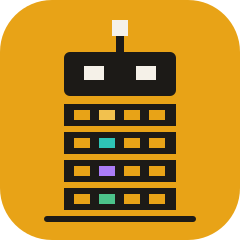

AI STUDIO Kantor virtual tim agent CellSatu gedung, 29 agent AI, satu perintah.
Markas Cell adalah kantor virtual untuk tim agent AI. Setiap agent punya meja, keahlian, dan atasan. Cell cukup memberi perintah ke Jarvis, lalu semua pekerjaannya bisa dilihat langsung di gedung 5 lantai.
Dari satu kalimat sampai hasil siap kirim
Agent jarang bekerja sendirian. Mereka saling menyerahkan pekerjaan seperti ban berjalan, dan semuanya terlihat di gedung.
Analogi gampangnya: bayangkan sebuah restoran. Cell pemiliknya, Jarvis kepala pelayan yang membagi pesanan ke dapur yang tepat. Tiap divisi adalah satu dapur. Sebelum makanan keluar ke pelanggan, tim QA mencicipi, lalu pemilik memberi OK.
5 lantai, dikelompokkan menurut alur kerja
Agent yang sering serah-terima pekerjaan ditaruh di lantai yang sama. Lantai paling atas khusus untuk santai.
4 ban berjalan yang paling sering dipakai
Pilih satu alur untuk melihat siapa mengerjakan apa, berurutan dari awal sampai Cell memberi OK.
Aman dulu, cepat kemudian
Aturan ini berlaku untuk semua agent tanpa kecuali.
Mendapat klien website pertama
Tidak perlu menjalankan 29 agent sekaligus. Lima agent ini sudah cukup membentuk rantai cari → deal → kerjakan → pamerkan. Yang lain diparkir dulu dan tidak memakan kuota.